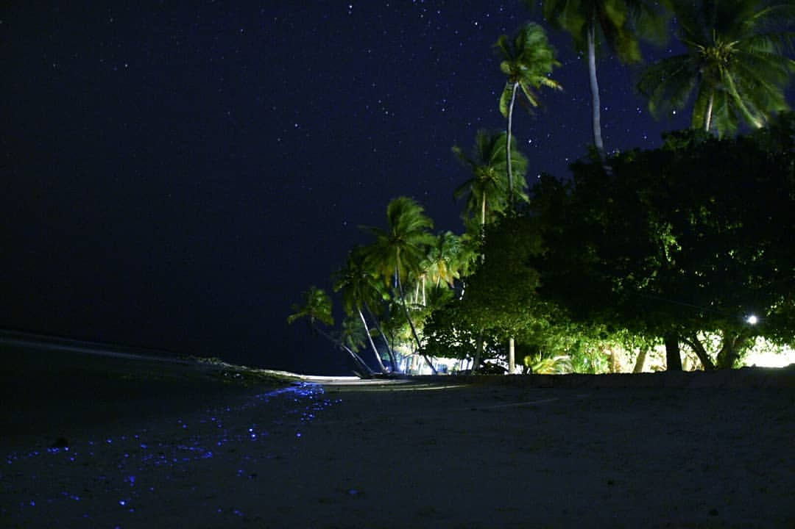
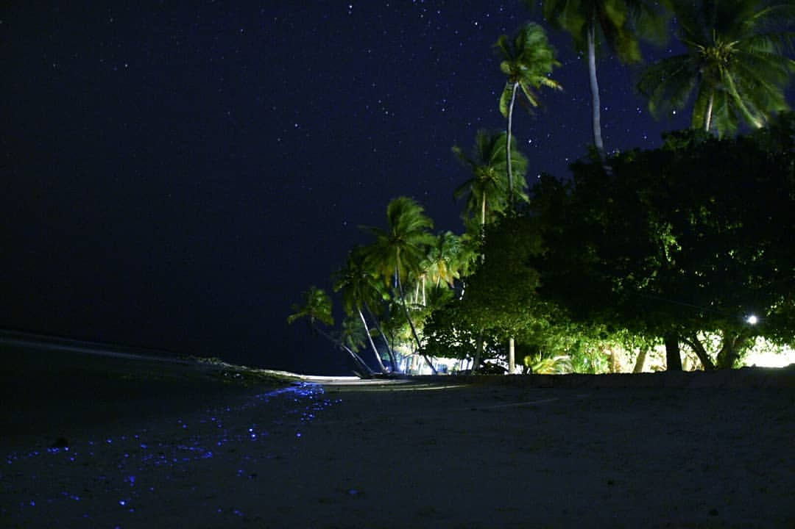
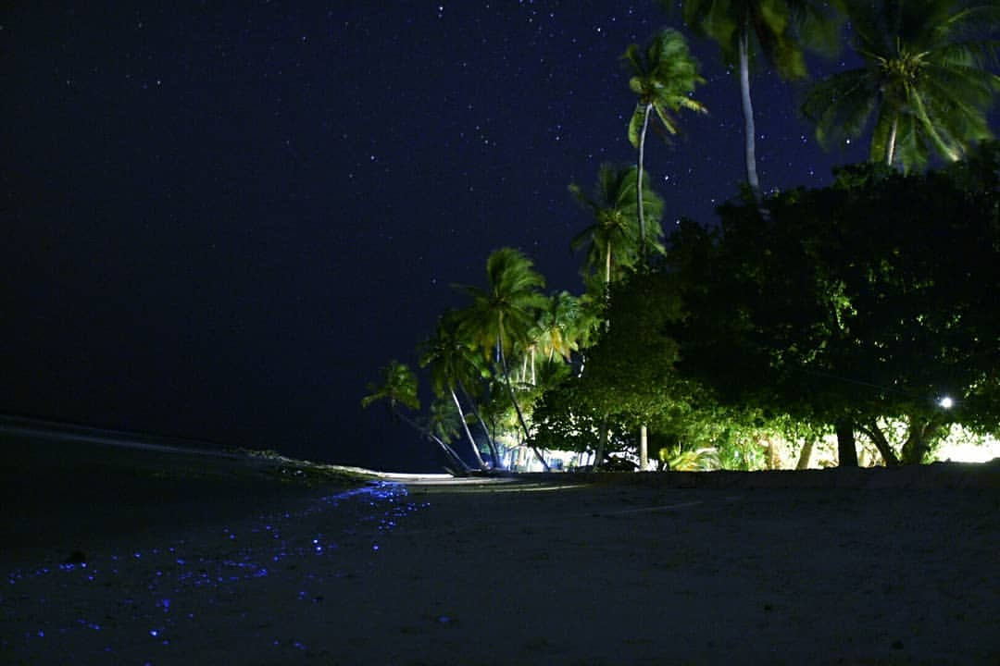

1️⃣ Na Maldive ne možete povesti psa – prema islamskim pravilima, psi se smatraju nečistim životinjama, pa im sveta knjiga zabranjuje boravak. 🐾
2️⃣ Iako slike mora krase mnoge desktop pozadine, prava magija krije se ispod površine. Zato ponesite svoju masku i disalicu! Iznajmljuju se, ali više ćete želeti da stavite u usta svoju. 🤿
3️⃣ Pesak na Maldivima je poseban, nastao je od korala, nikada ne peče, već je uvek prijatan pod nogama. 🏝️ Još onako puderast...
4️⃣ Noću vas na nekim plažama čeka čarolija - more zasvetli kao da je posuto plavim zvezdicama. Zaslužan je plankton koji stvara prizor kao iz bajke. 🌌
5️⃣ Na lokalnim ostrvima nećete naći alkohol, a Maldivci ne piju čak ni gazirane sokove. U resortima, međutim, sve to postoji - od koktela do vina. 🍹Takođe u resortima možete biti u kupaćim kostimima a na lokalnim ostrvima samo na bikini plaži.

Kad Sandra krene u novi kraj sveta, vaš inbox prvi sazna. Prijavite se i stižu vam sve nove priče mejlom.